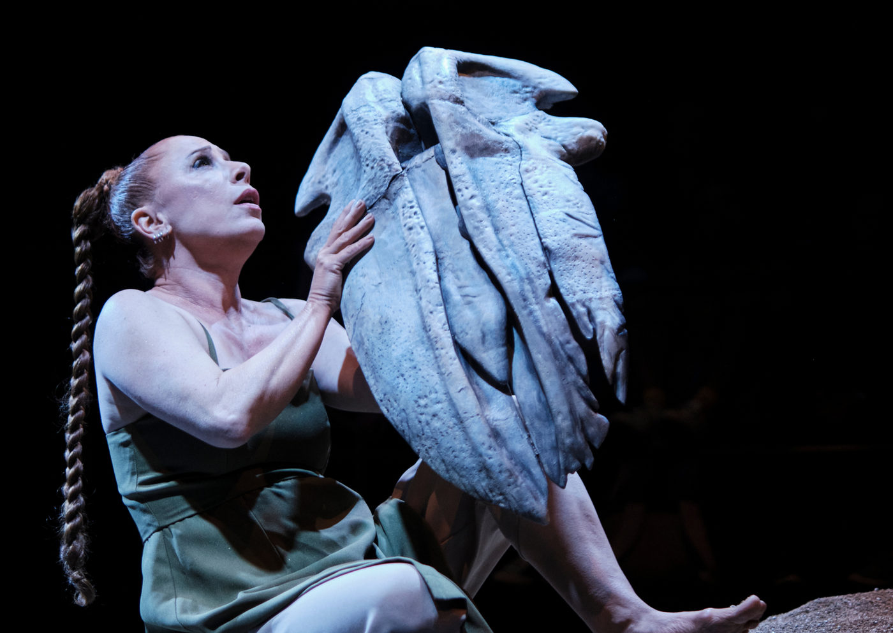

“Queda de Baleia ou Canto para Dançar com Minha Morte” estreia na capela do Cemitério do Redentor em São Paulo

A morte como tabu, experiência íntima e reflexão coletiva está no centro de “Queda de Baleia ou Canto para Dançar com Minha Morte”, novo solo da atriz, dramaturga e diretora Bruna Longo, com codireção de Vitor Julian.
O espetáculo estreia em um cenário carregado de simbolismo: a capela do Cemitério do Redentor, no bairro do Sumaré, em São Paulo, com temporada de 12 de setembro a 26 de outubro de 2025, de sexta a domingo, sempre às 19h.
A experiência pessoal transformada em dramaturgia
A peça nasce da vivência da artista com a morte do pai, em 2022, experiência que a levou a questionar a ausência de rituais, a burocratização do luto e o silêncio social em torno da finitude. “Dois dias depois da morte do meu pai, passei a usar o barro desse luto como material para meu trabalho. Meu templo é o teatro, minha liturgia é a pesquisa artística, minha reza é a dramaturgia”, afirma Bruna Longo.
Na encenação, a atriz imagina a própria morte. Já falecida, ela elabora o luto de si mesma, gesto impossível na realidade, mas que serve de motor para discutir a forma como as sociedades capitalistas ocidentais tratam a morte: como algo a ser ocultado, higienizado e rapidamente superado.
Reflexão sobre a finitude e a cultura do luto
O espetáculo questiona o esvaziamento dos ritos fúnebres tradicionais, substituídos por práticas padronizadas, como a crescente indústria das cremações, e critica a visão da medicina que, ao prolongar vidas, transforma hospitais em espaços de enfrentamento contra o inevitável.
Para Bruna, o silenciamento da morte na vida cotidiana também apaga uma dimensão essencial da cultura humana. “Elaborar o luto inaugura quem somos. A morte inspirou os primeiros ritos, a filosofia, a religião, a arte. Não falar da morte não a afasta, apenas a torna mais temerosa.”
Uma obra de arte em diálogo com a ancestralidade
A montagem envolve diversas camadas estéticas e simbólicas: da cenografia e figurinos concebidos pela própria Bruna, com provocações de Kleber Montanheiro, até a presença de um esqueleto de baleia criado por Paul Zanon, além de trilha incidental de L.P. Daniel. O resultado é um mergulho sensorial que transita entre teatro, rito e performance, propondo ao público uma experiência íntima e visceral.
Sinopse
Bruna Longo parte de sua experiência com a morte do pai para elaborar uma dramaturgia na qual imagina a própria morte. Já falecida, ela elabora o luto de si mesma e convida o público a refletir sobre a finitude, o silêncio e o tabu em torno da morte nas sociedades contemporâneas.
Serviço
Espetáculo: Queda de Baleia ou Canto para Dançar com Minha Morte
Temporada: 12 de setembro a 26 de outubro de 2025
Sessões: sextas, sábados e domingos, às 19h
Local: Capela do Cemitério do Redentor – Av. Dr. Arnaldo, 1105 – Sumaré, São Paulo (SP)
Ingressos: R$60 (inteira) | R$30 (meia-entrada)
Vendas online: Sympla
Duração: 80 minutos
Classificação: 12 anos
Lotação: 20 lugares